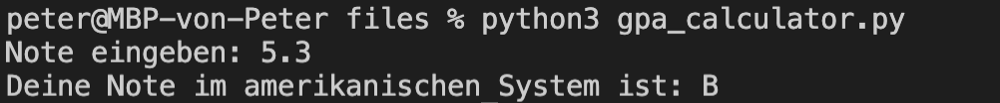

Dokumente
Hilfreiche Links
Wichtig: Verbringen sie nicht zu viel Zeit mit der Theorie. Stundenlang Videos schauen oder Texte lesen, wird sie nicht weiterbringen. Beim Programmieren geht es um das “Können” und nicht um das “Wissen”. Deshalb empfehle ich ihnen, selber zu experimentieren und viel zu üben (z. B. mit den Aufträgen oder eigenen Ideen/Projekten).
Auf Wikipedia finden sie eine gute Zusammenfassung zum Thema Flussdiagramm. Auch hier gilt: “Versuchen sie es einfach”. Erstellen sie doch einfach einmal ein Diagramm und fragen mich (oder MitschülerInnen), was ich davon halte. Wenn sie das Flussdiagramm digital erstellen wollen, empfehle ich Ihnen draw.io (siehe “Flowchart”).
Auf Youtube finden sie (teilweise) gute Erklärvideos zum Thema Python. Hier sind einige Beispiellinks zu den Themen If-Anweisung und If-Elif-Else.
Die Plattform W3Schools bietet sich als Nachschlagewerk an (in Englisch). Hier ist der Link zum Thema Conditionals.
Prüfungsvorbereitung
Was ist der Output von diesem Programm? Erstellen sie ein Flussdiagramm dazu.
x = "Hello" y = "Tom" if x != "Hello": y = "Tim" else: y = "Tina" print(y)
Was ist der Output von diesem Programm? Erstellen Sie ein Flussdiagramm dazu.
x = 5 if x < 0: print("a") elif x > 0: if x == 5: print("b") print("c") else: print("d")
Erstellen sie ein Programm, welches Schweizer Noten in das amerikanische Notensystem umrechnet.
Schweiz US 5.5-6 A 4.5-5.4 B 4.0-4.4 C <4 F 